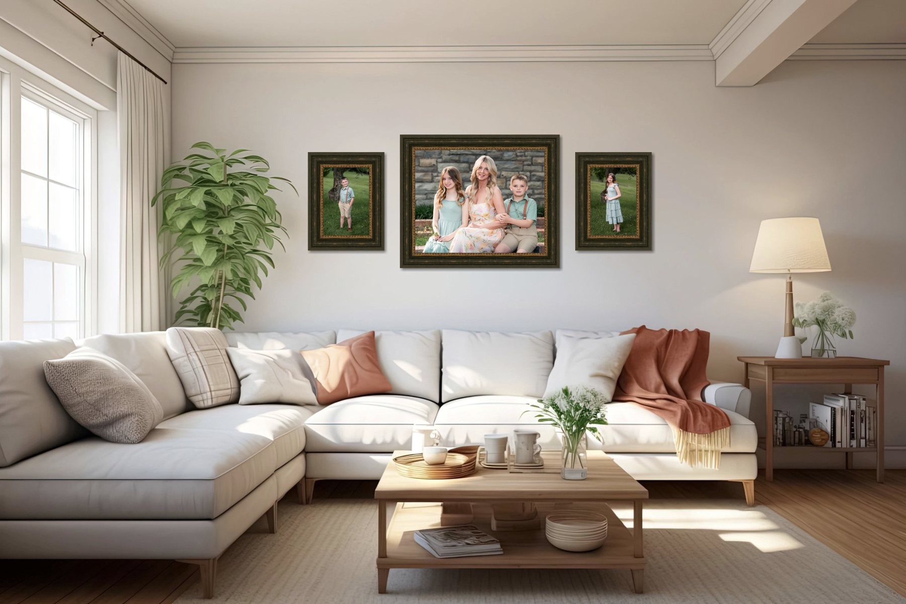

If you have only ever booked a “photo session,” a fine art portrait experience can feel like a different world — because it is. Here is what makes them different, and why Ohio Valley families are choosing artwork over files.
A photo session ends with files.
A fine art portrait ends with artwork.
Most sessions hand you a gallery of images and wish you luck. A fine art portrait is designed to become something real — a finished piece on masonite, canvas, metal, or acrylic, made for a specific wall in your home.

Not a snapshot. A finished piece, designed for the wall it lives on.
It's guided from the first hello to the finished wall
From the first conversation to the moment your portrait is hanging, everything is planned around you — your family, your home, your walls. You can see how that unfolds, step by step, in the experience.

Photographed, retouched, and finished by hand — the way artwork is made.
It's made to last for generations
Gallery-grade materials and archival finishing mean your portrait isn't a passing trend. It's an heirloom.
Is it worth it?
If you simply want nice files, a regular session is perfect. If you want artwork your family will treasure for decades, a fine art portrait is the one that lasts. You can explore what that looks like on our investment page, or meet the artist behind the studio on our about page.
FAQ
What is a fine art portrait?
A guided experience that ends with finished, gallery-grade wall art.
Do you serve the Ohio Valley?
Yes — our studio is in Bellaire, Ohio.
How much does it cost?
Gift portraits and prints begin at $350. Finished wall portraits begin at $1,500, and most families invest between $1,499 and $3,500.